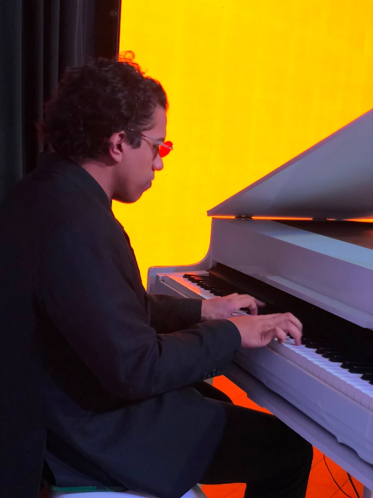

Locação de pianos de cauda e verticais de altíssimo padrão para Casamentos, Debutantes, Clipes Musicais e Parcerias B2B com total segurança e logística própria.
O design clássico e o som impecável dos pianos Black White elevam o nível de qualquer casamento, festa de 15 anos ou produção audiovisual, gerando imponência e impacto visual incomparáveis.
Seja o piano de cauda preto tradicional que emana sobriedade e prestígio, ou o piano branco esculpido para criar uma atmosfera de sonho, nossos instrumentos são peças centrais que capturam a atenção e eternizam momentos em fotografias e filmagens de alto padrão.
Presença cenográfica imponente no altar, palco ou estúdio.
Instrumentos de marcas consagradas afinados no dia do evento.

Confira fotos reais dos nossos pianos ambientados em produções e casamentos de luxo
Formatos personalizados para diferentes públicos e necessidades de alto padrão
A trilha sonora e o cenário perfeito para o sim mais importante da sua vida. Integramos com empresas de música parceiras e assessores para garantir que o instrumento seja a estrela visual e sonora do seu altar.
Saiba Mais →Agregue sofisticação e modernidade para o momento clássico da valsa e para a ambientação geral da festa. Nossos pianos adaptam-se tanto a cenários tradicionais quanto a pistas de dança tecnológicas de 15 anos.
Saiba Mais →Cenografia de altíssimo impacto visual para gravadoras, produtoras de vídeo, bandas e artistas solo. Instrumentos impecáveis com polimento reflexivo profissional, garantindo fotos e takes de vídeo majestosos.
Saiba Mais →Logística homologada para atender maestros, orquestras, agências de live marketing e empresas de música de casamento. Total segurança contratual, relatórios de afinação e pontualidade sob medida.
Saiba Mais →Sabemos que eventos de luxo e cronogramas de gravação não toleram falhas ou atrasos. Por isso, estruturamos uma operação robusta focada em mitigar qualquer risco técnico.
Realizamos a entrega, montagem e retirada do piano com veículos próprios e uma equipe altamente treinada no manuseio de instrumentos pesados e de alto valor. Cuidamos de todo o processo de proteção física com capas acolchoadas e equipamentos específicos de transporte.
O piano chega ao seu destino totalmente revisado. Realizamos um ajuste técnico fino no local da montagem para garantir que o instrumento atenda às necessidades de sonoridade de qualquer músico, orquestra ou estúdio de gravação.
Trabalhamos em estreita colaboração com assessorias de casamento, decoradores e diretores de cena. Respeitamos rigidamente a janela horária de montagem e passagem de som para que a montagem ocorra em perfeita ordem e silêncio nos momentos exigidos.
Selecione suas preferências abaixo para gerar sua solicitação personalizada de orçamento no WhatsApp.
A experiência de noivos e profissionais com a entrega técnica e cenográfica de nossos pianos
O piano de cauda da Black White foi a estrela da nossa cerimônia de casamento. Além da sonoridade que emocionou os convidados, a presença cenográfica do instrumento no altar trouxe uma imponência majestosa que eternizou nossas fotos. O cuidado com a entrega e o respeito ao cronograma da assessoria foram impecáveis.
Como produtor musical de clipes, exijo precisão técnica de afinação e integridade física do móvel. A Black White atende com perfeição. O piano de cauda branco chegou impecavelmente polido para os takes de câmera e com a afinação cravada. A pontualidade da equipe de entrega no set de filmagem foi fundamental para nossa luz.